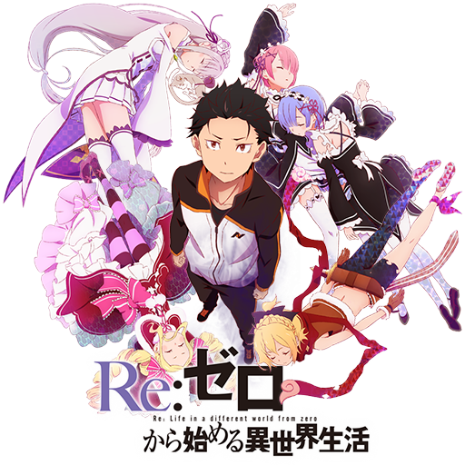
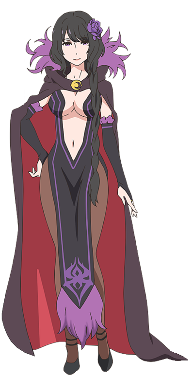
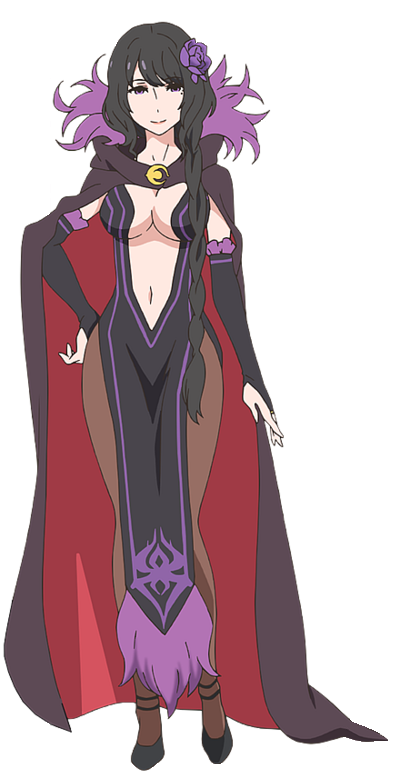
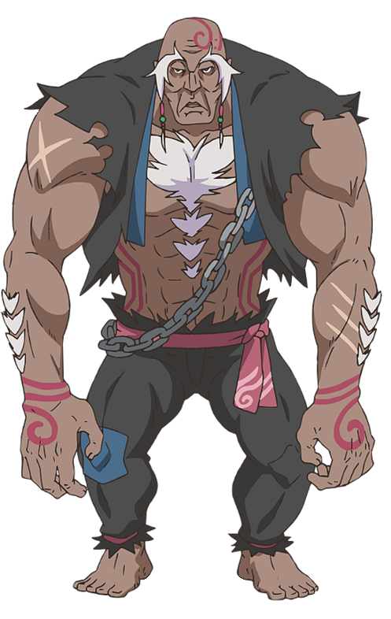
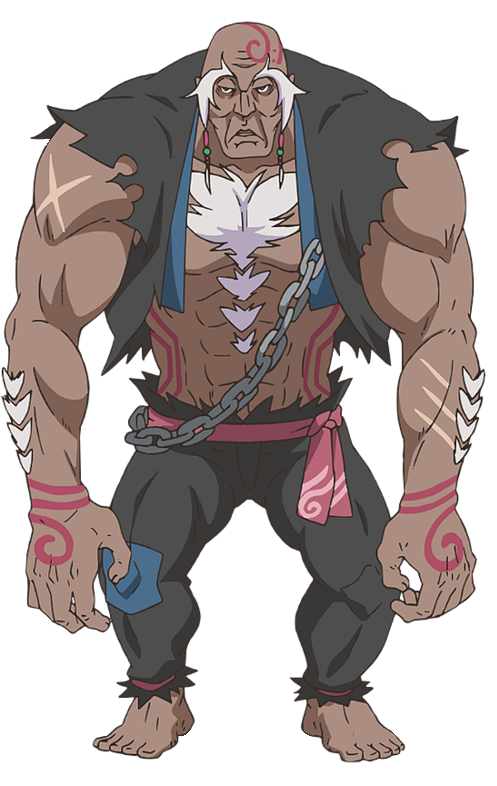

Date de révision: 11 Octobre 2016

Subaru
Émilia
Puck
Béatrice
Elsa


Ram
Rem
Reinhard
Rom


Roswaal
Wilhelm
Felt
Anastasia

Crusch
Félix
Priscilla

Web Novel
Light Novel
Manga
Anime


Épisode 1
La Fin du commencement et le début de la fin
La Fin du commencement et le début de la fin
Épisode 2
Retrouvailles avec la sorcière
Retrouvailles avec la sorcière
Épisode 3
Une vie qui commence de zéro dans un autre monde
Une vie qui commence de zéro dans un autre monde
Épisode 4
Dans l'intimité du manoir Roswaal
Dans l'intimité du manoir Roswaal
Épisode 5
Au loin, le matin promis
Au loin, le matin promis
Épisode 6
Le Cliquetis de la chaîne
Le Cliquetis de la chaîne
Épisode 7
Retour à la case départ pour Subaru Natsuki
Retour à la case départ pour Subaru Natsuki
Épisode 8
Sèche tes larmes après avoir pleuré sans répit
Sèche tes larmes après avoir pleuré sans répit
Épisode 9
Le Sens du courage
Le Sens du courage
Épisode 10
Une méthode d'ogre
Une méthode d'ogre
Épisode 11
Rem
Rem
Épisode 12
Retour à la capitale
Retour à la capitale
Épisode 13
Subaru Natsuki, chevalier autoproclamé
Subaru Natsuki, chevalier autoproclamé
Épisode 14
La Maladie du désespoir
La Maladie du désespoir
Épisode 15
Au bord de la folie
Au bord de la folie
Épisode 16
Les Désirs d'un porc
Les Désirs d'un porc
Épisode 17
Couvert de honte
Couvert de honte
Épisode 18
De zéro
De zéro
Épisode 19
Chasse à la baleine blanche
Chasse à la baleine blanche
Épisode 20
Wilhelm van Astrea
Wilhelm van Astrea
Épisode 21
Un pari contre le désespoir
Un pari contre le désespoir
Épisode 22
Éclair de paresse
Éclair de paresse
Épisode 23
Diabolique paresse
Diabolique paresse
Épisode 24
Le chevalier autoproclamé et le chevalier modèle
Le chevalier autoproclamé et le chevalier modèle
Épisode 25
Une simple histoire
Une simple histoire